庭木を、整える
松のみどり摘み・もみあげ、マキや生垣の刈り込みなど。木の性質と、お庭全体の姿を見ながら仕立てます。
- マツ
- マキ
- カイヅカイブキ
- 生垣
藤沢・辻堂の庭師
柴崎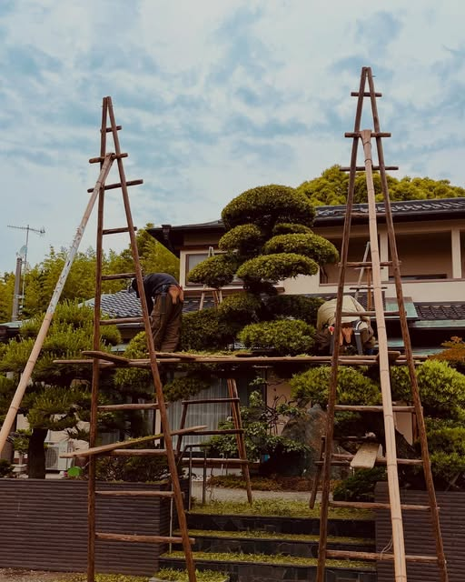
剪定・手入れから庭づくり、外構・リフォームまで。
外まわりのことは、なんでもお任せください。
松は、一年で姿を整えるものではありません。毎年の手入れを重ねて、少しずつ、その家らしい形になっていきます。
柴崎造園は、藤沢市辻堂を拠点に、個人のお宅の庭木の手入れから、お寺の松、新しい庭づくりまで手がけてきました。三脚に登り、枝を一本ずつ見ながら鋏を入れる。昔ながらの仕事を、いまも続けています。
「この木、伸びすぎてしまって」「生垣だけお願いしたい」――そんな小さなご相談から、どうぞお気軽に。
松のみどり摘み・もみあげ、マキや生垣の刈り込みなど。木の性質と、お庭全体の姿を見ながら仕立てます。
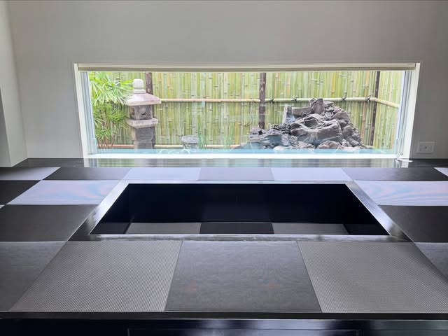
伐採・抜根から植栽、石組みまで。長い期間をかけた庭づくりも、一つずつ形にしていきます。
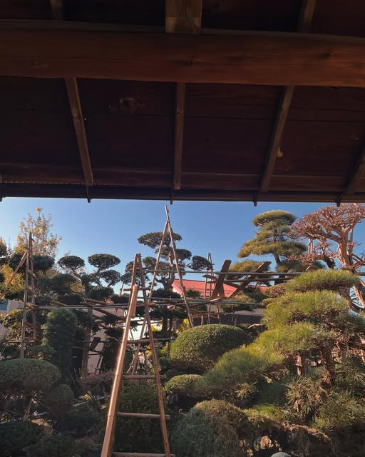
フェンスや門まわり、お庭まわりのリフォームも。庭木とあわせて、外まわりのことをまとめてご相談いただけます。
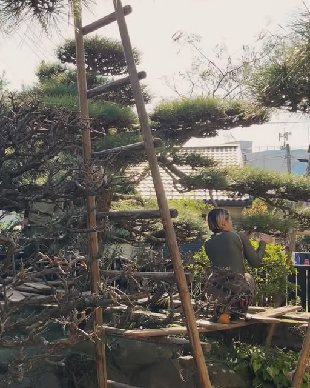
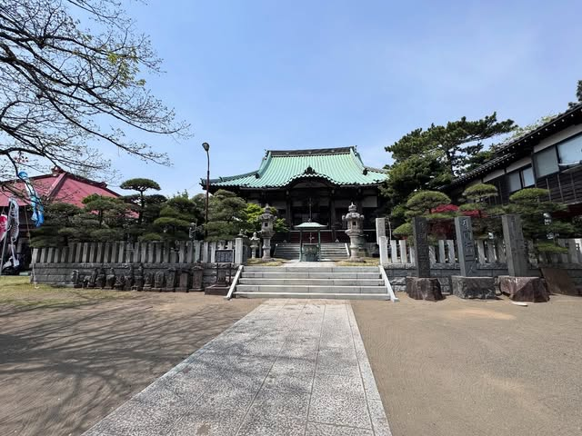
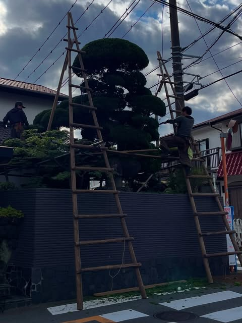
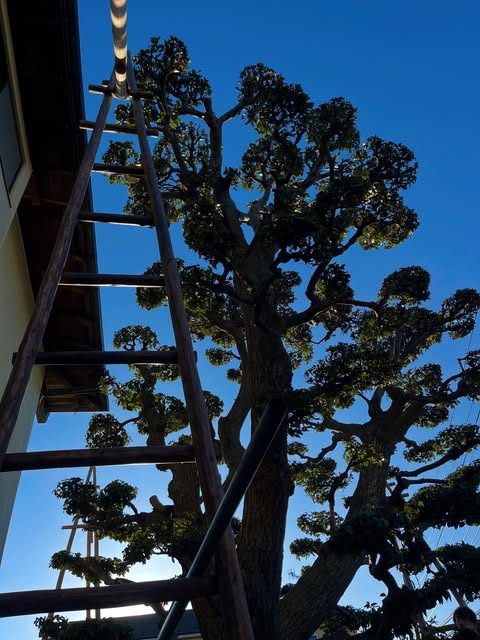
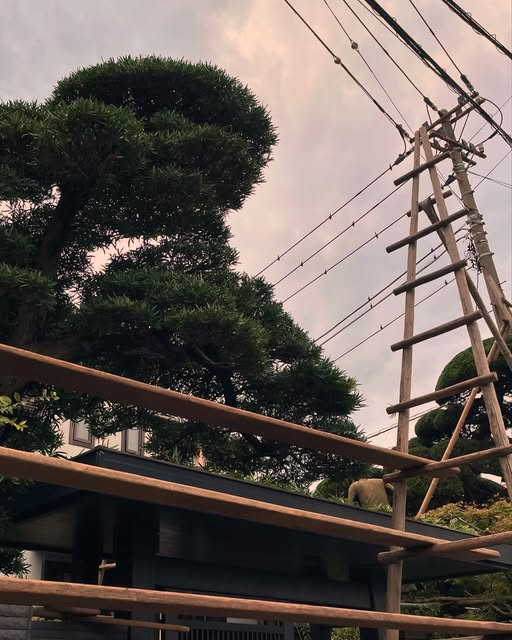
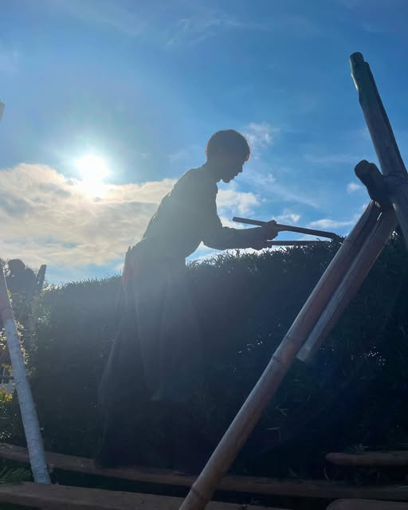
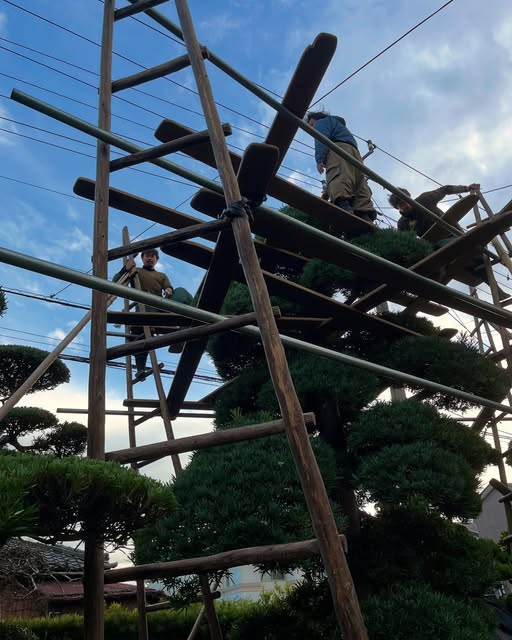
木の手入れには、それぞれ向いた時期があります。「いつ頼めばいいの？」の目安にどうぞ。お庭の状態にあわせて、時期のご相談も承ります。
※ 一般的な目安です。樹種や木の状態、その年の気候によって前後します。
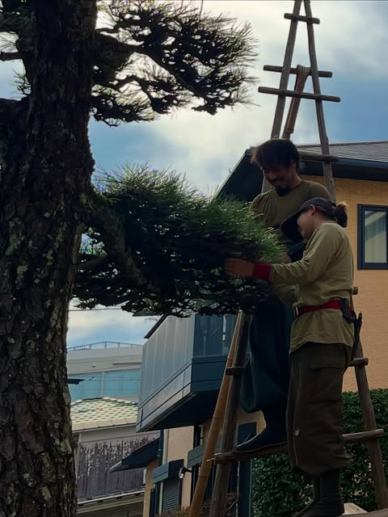
大きな松でも、三脚を立てて木に登り、枝ぶりを見ながら鋏を入れていきます。機械で一気に刈り揃えるのではなく、来年の芽吹きまで考えて残す枝を選ぶ。それが、長く付き合える木をつくるいちばんの近道だと考えています。
現場には女性の職人も。細やかな目配りと、最後の掃き掃除まで、気持ちよく仕上げます。
大きな怪我や事故なく、一年一年の仕事を積み重ねられることに感謝しながら。
木の種類や本数、気になっていることをお聞かせください。写真があれば話が早く進みます。
お庭を見せていただき、手入れの内容と費用をご案内します。
ご近所への配慮をしながら、三脚・道具を使って丁寧に手入れします。
剪定した枝葉は集めて片付け、掃き掃除までして完了です。
はい、一本からでもお気軽にご相談ください。生垣だけ、松だけといったご依頼も承っています。
藤沢市辻堂を拠点に、藤沢・茅ヶ崎・鎌倉・逗子など湘南エリアを中心にうかがっています。その他の地域もご相談ください。
作業後に集めて片付けます。処分の方法や費用については、お見積もりの際にご説明します。
はい。松のみどり摘み・もみあげなど、時期にあわせた年間のお手入れもご相談ください。
外構工事やリフォームなど、外まわり全般を承っています。庭木の手入れとあわせてご相談いただけます。
「この木、どうしたらいい？」という段階でも大丈夫です。職人が直接お話をうかがいます。
TEL0466-34-1080受付 8:00〜18:30（土曜は18:00まで）／日曜定休
| 屋号 | 有限会社 柴崎造園 |
|---|---|
| 所在地 | 〒251-0043 神奈川県藤沢市辻堂元町4-12-1 地図を開く |
| 営業時間 | 月〜金 8:00〜18:30 土 8:00〜18:00 日曜定休 |
| 仕事 | 庭木の剪定・手入れ／造園・庭づくり／外構工事／リフォーム |
| 所属 | 藤沢市緑化事業協同組合（要確認） |